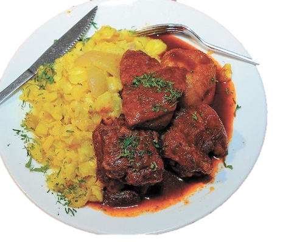

Bolivian Mondongo Recipe

Mondongo is a pork stew from the Chuquisaca region of Bolivia. The stew is cooked with ground chili, garlic, brown pepper and served with a large amount of corn.
This pork dish, in which the meat, which is still very fatty, is cooked in a sauce with onions, chilies, cumin, and various other herbs and spices. Sometimes people add yellow food coloring. Then the tripe is served with potatoes and corn. But you can also get it with rice.
Ingredients
- 2kg of pork
- 6pods of red pepper
- 6 to 8 peeled potatoes
- ½ kg of corn mote (soaked)
- butter or oil
- 1 tablespoon of cumin
- 3 garlic cloves
- peppermint
- 1 tablespoon of yellow pepper
- ½ kg of cooked pork rind
- 1 chopped onion (optional)
- Salt to taste
Steps
- Prepare the ají colorado, starting with removing the seeds from the pods. Soak them in boiled water.
- If the corn mote is not cooked, boil it for at least one hour.
- Prepare the pork, cutting it into small pieces. Likewise, proceed like this with the cooked pork hides, at a very small size.
- Fry the pork using a saucepan.
- When the corn mote has reached the point of cooking, add the pieces of pork skin and cook for 15 minutes.
- While the corn mote is cooking, use a pot and cook the dressing ingredients over low heat (the onion chopped into small cubes, the toothpick and a little salt). Add this preparation to the pot with the mote, and cook for another 5 to 10 minutes.
- Grind the chili in a blender or fulling machine, taking advantage of the water used for soaking. It should be foreseen that it is well ground and thick.
- Cook the potato in water with a pinch of salt.
- Using a saucepan, pour 3 tablespoons of oil, the ground red pepper, and season with a tablespoon of cumin. Add a glass of water and a pinch of salt. Cook for 10 to 15 minutes. Add the mint and the fried meats. Move the preparation and cook 15 more minutes.
- Serve the dish, starting with the mote and potatoes. Add a portion of pork, with its spicy broth. Finally decorate with a pinch of parsley.